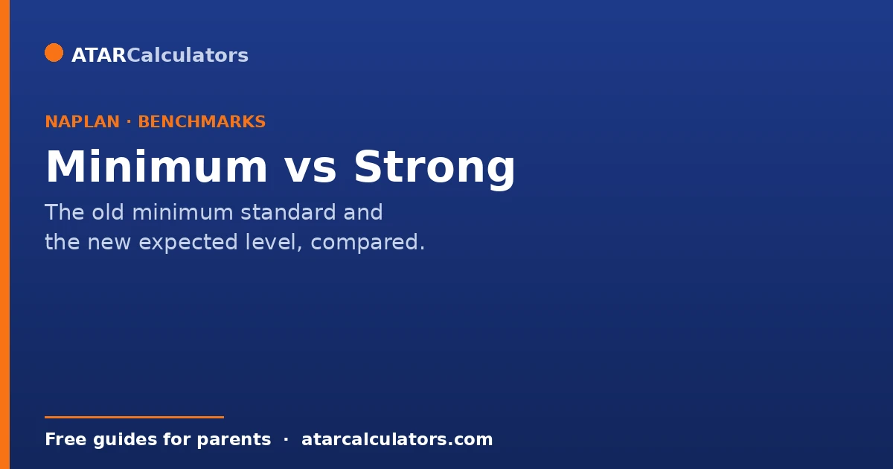
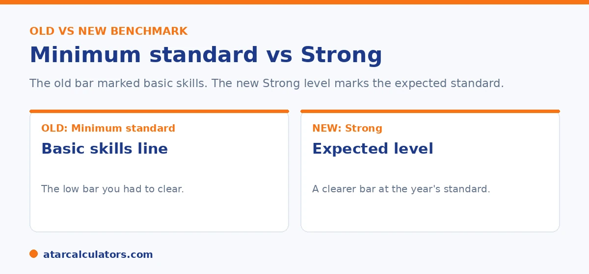

Here is the short version. The National Minimum Standard was the old benchmark, a low bar marking the basic skills expected for each year. It was dropped in 2023. The new system uses four levels, and Strong is the expected, or proficient, level for the year. Strong is a higher and clearer bar than the old minimum. This guide explains the difference and what it means for reading your child's result.
Two words cause a lot of confusion: minimum and proficient. One comes from the old NAPLAN system, the other from the new one. Here is what each means, and why it matters.
The change in 2023 raised the bar and made it clearer. To see where your child sits now, use our NAPLAN band calculator.
Key takeaways
- The National Minimum Standard was the old, low benchmark for basic skills.
- It was the second band shown for each year, and it was dropped in 2023.
- The new system uses four levels, with Strong as the expected, or proficient, level.
- Strong is a higher and clearer bar than the old minimum.
- Being above the old minimum did not always mean on track. Strong is meant to.
- Needs additional support now flags children who need help more clearly.
What the National Minimum Standard was
From 2008 to 2022, NAPLAN reported a National Minimum Standard. This was a low benchmark that marked the basic skills expected at each year level. It sat at the second band shown for each year, so Band 2 for Year 3, Band 4 for Year 5, Band 5 for Year 7, and Band 6 for Year 9.

A child at or above the minimum standard was seen as having the basic expected skills. A child below it was flagged for support.
Why the minimum standard was dropped
The minimum standard had a problem. It set the bar low, so it could give the impression that a child was on track when they still needed help. It also identified too few of the children who were struggling.
In 2023, it was dropped and replaced with a clearer system. The new Needs additional support level is designed to flag children who need help more accurately than the old minimum standard did.
What proficient, or Strong, means now
The new system uses four levels: Exceeding, Strong, Developing, and Needs additional support. Strong is the expected, or proficient, level. It means your child is meeting challenging but reasonable expectations for their year.
This is a higher and clearer bar than the old minimum standard. Where the old minimum marked basic skills, Strong marks the standard your child is actually expected to reach.
Want to see whether a result reaches Strong?
Open the NAPLAN band calculator →Is Strong the new minimum standard?
Not quite, and this is the key point. Strong is the expected level, not a bare minimum. It is the standard most children are aiming for.
The closest thing to the old minimum is the line below Developing. A result of Needs additional support is the new signal that a child is well below expectations and needs dedicated help. So Strong is the target, Developing is below the expected level, and Needs additional support is the flag for support.
The distinction matters because the old and new systems drew their lines in different places, and confusing them leads parents to misread a result. Under the previous system, the National Minimum Standard was a low bar. Clearing it meant a child was not in the bottom group, not that they were where they should be. Many parents nonetheless read "met the minimum standard" as reassuring, when it often sat well below the expected level. The four-level system removes that ambiguity by naming the expected level plainly as Strong. So a child at Strong is meeting the standard for their year. A child at Exceeding is above it. A child at Developing is working towards it and would benefit from some support. And a child at Needs additional support is the one the system is genuinely flagging. The practical takeaway is not to map old and new labels onto each other. But to read the new level for what it says. Aim for Strong as the healthy target. Treat Developing as a signal to keep an eye on progress, rather than a crisis. Treat Needs additional support as the prompt to talk to the teacher about targeted help.
What this means for reading a result
The practical takeaway is simple. Do not aim for just above a minimum. Aim for Strong, which is the expected standard for your child's year.
If your child is at Developing, that is an area to work on, not a failure. If they are at Strong or Exceeding, they are meeting or beating expectations. For more on what counts as a good result, see our guide on a good NAPLAN score by year level.
Proficiency is not pass or fail
The four levels are not a pass or fail grade. Developing does not mean your child failed. It means they are working toward the standard for their year, and may need some extra support to reach it.
So read the levels as a description of where your child is, not a verdict. Even Needs additional support is a signal to help, not a mark of failure.
How the standards are set
The proficiency standards are set by education authorities as challenging but reasonable expectations for each year level. They describe what a student who is on track should be able to do.
This is why Strong is meant to reassure. It shows your child is meeting a genuinely demanding standard, not just scraping a minimum.
Why Strong is meant to reassure
Strong was introduced to give families clearer, more encouraging information than a bare minimum. The old National Minimum Standard set a low floor, so meeting it said little about whether a child was really on track.
Strong sets a higher, more meaningful bar. So a child at Strong is comfortably meeting a demanding standard for their year, which is far more reassuring than simply clearing a minimum. This is the main reason the wording changed.
Common questions
What is the difference between minimum standard and proficient?
The National Minimum Standard was the old, low benchmark for basic skills, used until 2022. Proficient, or Strong, is the new expected standard, which is a higher and clearer bar. The minimum was dropped in 2023.
What was the National Minimum Standard?
It was the old benchmark marking the basic skills expected at each year level. It sat at the second band shown for each year: Band 2 for Year 3, Band 4 for Year 5, Band 5 for Year 7, and Band 6 for Year 9.
What replaced the minimum standard?
Four proficiency levels replaced it in 2023: Exceeding, Strong, Developing, and Needs additional support. Strong is the expected level, and Needs additional support flags children who need help.
Is Strong the new minimum standard?
No. Strong is the expected, or proficient, level, not a bare minimum. The new signal that a child needs help is Needs additional support, which sits below Developing.
What is the expected standard now?
Strong is the expected standard for every year level. It means your child is meeting challenging but reasonable expectations for their year.
Was being above the old minimum good enough?
Not always. The old minimum was a low bar, so a result just above it could still mean a child needed support. The new Strong level is a clearer measure of being on track.
See whether a result reaches Strong
Enter a NAPLAN result and year level to see the indicative level. Free, and no signup.
Open the NAPLAN band calculator →Related guides
This guide is general information for parents, not formal advice. NAPLAN reporting can change, so always check the official details on the National Assessment Program (NAP) site, and talk to your child's teacher. Reviewed by the ATARCalculators Editorial Team.